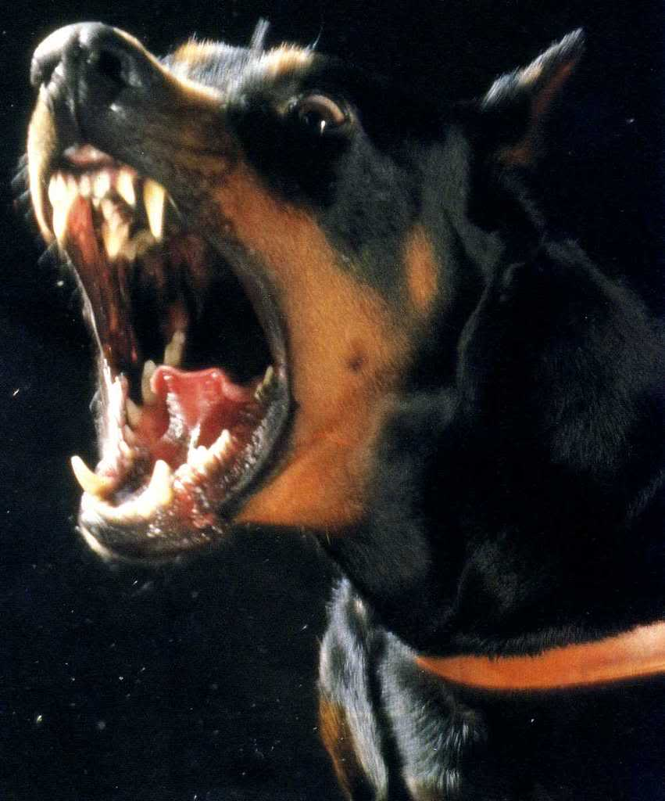

GETTING-BIT Is A awesome game to play with A Doberman you can sneak up on them; subsequently scaring the shit out of them ;furthermore causing them to maul you to death
Let's play GET-BIT. Click here to see the surprise!
What A cool doberman!Click here to hide him again
Honestly doberman pinscher's are amazing dogs. I have one sleeping on the couch next to me as I write this They are wonderful with children and adults. at times they will be suspicious of strangers
The Dobermann to most of the world, or Doberman Pinscher as it is known in the US and Canada, is a medium-large breed of domestic dog originally developed around 1890 by Karl Friedrich Louis Dobermann, a tax collector from Germany. Wikipedia